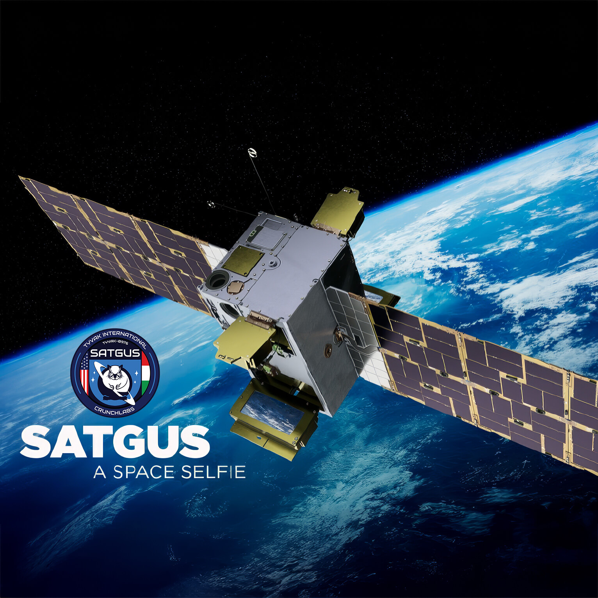
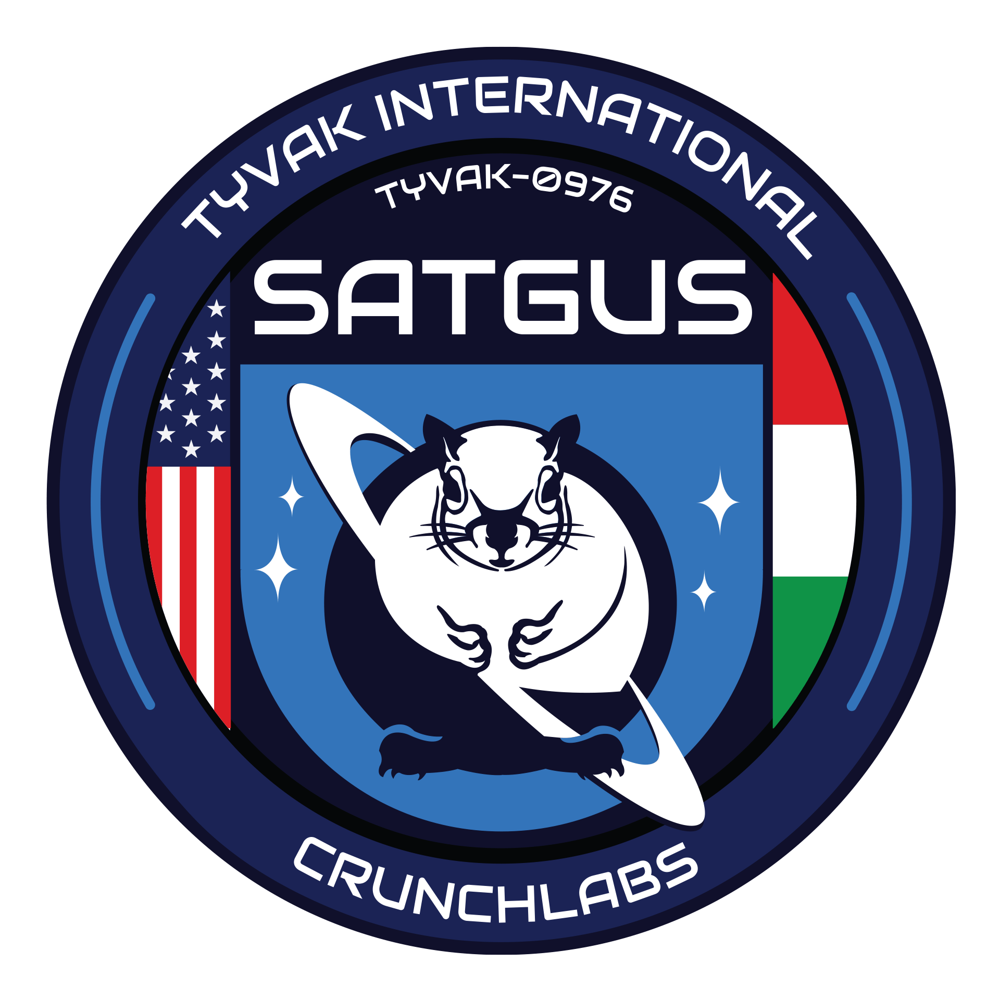

Hardware físico no enquadramento
O display não é um recorte flutuante: aparece a carcaça preta do módulo, parafusos, bordas e a estrutura do satélite. Geradores de imagem raramente modelam um produto de missão com essa coerência mecânica.
Foto oficial · SAT GUS · LEO ~500 km
Eu e minha namorada no display do satélite SAT GUS, com a curva da Terra ao fundo — capturada em órbita e devolvida à Terra ontem, após cerca de 1 ano e 2 meses. Hardware real. Não é arte de IA.
O projeto Space Selfie da CrunchLabs, idealizado pelo engenheiro e youtuber Mark Rober, é um marco na democratização do acesso ao espaço. Lançado em 14 de janeiro de 2025, permitiu que pessoas de todo o mundo enviassem fotos para serem exibidas em um satélite em órbita terrestre: o SAT GUS.
O SAT GUS é um CubeSat 12U que orbita a Terra a aproximadamente 500 km de altitude. Ele exibe imagens em uma tela e as fotografa com a Terra como pano de fundo, usando um Google Pixel a bordo. O sonho de ter uma “selfie” no espaço virou algo acessível — e documentado.
O satélite ainda está em órbita (NORAD 62713). Abaixo, o mesmo mapa ao vivo do SpaceSelfie.com — “Where is the satellite right now?”.

Acompanhe o SAT GUS em tempo real — o mesmo mapa do SpaceSelfie.com. Ela corre a cerca de 27.000 km/h (~17.000 mph), a ~300–500 km de altitude, e completa uma volta na Terra a cada ~90 minutos.
No mapa: posição atual, trilha orbital, próximas passagens sobre a sua localização e dados TLE. NORAD 62713.
Widget powered by N2YO.com — o mesmo embed usado em spaceselfie.com. Precisa de internet para carregar o mapa ao vivo.
Não é magia de software: é um satélite físico, um celular real no espaço e uma câmera de voo que fotografa a tela com o planeta atrás. Você manda a selfie e escolhe a cidade onde quer que a foto seja tirada. Passo a passo:
No site SpaceSelfie.com (portal CrunchLabs), o público envia a selfie. Em maio de 2025 o site abriu para todos; a nossa foto entrou na fila poucos dias depois.
Além da imagem, você indica a cidade / localização desejada. A ideia é o SAT GUS capturar a selfie quando estiver sobrevoando aquela região — o “photobomb” da Terra por trás do display fica alinhado com o lugar que você pediu (Mark Rober falava em tirar a foto “over your city” / perto da sua casa).
Importante: o satélite não fotografa vocês no chão. A selfie de vocês está na tela do Pixel; a câmera espacial fotografa esse display com o planeta ao fundo. A cidade escolhida define sobre qual pedaço da Terra o clique deve acontecer — não é garantia de “minha casa no centro do quadro”, e sim do fundo orbital daquela região.
A foto (e a preferência de localização) é transmitida ao satélite em LEO (~500 km). O SAT GUS foi construído pela Tyvak International (Turim), com câmera de voo da Redwire e parcerias com Google Pixel e T-Mobile.
Um Google Pixel comercial, montado no módulo de display do satélite, mostra a sua foto na tela. É literalmente o mesmo tipo de aparelho que usamos no chão — só que em órbita.
Quando a órbita passa pela área pedida, a câmera de bordo (Redwire) fotografa o display com a Terra curva e o limbo atmosférico azul no fundo. É esse enquadramento que prova a captura em órbita — e o porquê do mapa ao vivo “Where is the satellite right now?” importar tanto.
A imagem é enviada de volta pelos sistemas de solo da missão e entregue por e-mail — com marca d’água oficial CrunchLabs / SpaceSelfie e a legenda “Displayed on Google Pixel”.

Mark Rober liderou o desenvolvimento do SAT GUS. O lançamento (Falcon 9 Transporter-12) e toda a ciência por trás do projeto estão no vídeo oficial.
Documentário da missão: da concepção ao satélite em órbita, e por que a selfie ficou gratuita para o planeta. Canal oficial Mark Rober.

Parceiros da missão incluem CrunchLabs, Tyvak International, Redwire (câmera), Google Pixel (display) e T-Mobile. Lançamento a bordo do SpaceX Falcon 9 (missão Transporter-12), em 14 de janeiro de 2025.
Fontes oficiais e técnicas estão listadas no final desta página — para quem quiser conferir os números e a arquitetura do satélite.
Em maio de 2025, o SpaceSelfie.com abriu para o público. Dois dias depois, a nossa foto entrou na jornada. Depois de cerca de 1 ano e 2 meses de fila e captura em órbita, o arquivo voltou à Terra: recebemos a foto por e-mail ontem, 27 de julho de 2026 — pronta para ser revelada.
No nosso caso, entre o envio da foto (maio de 2025) e o e-mail com o arquivo oficial (27 de julho de 2026) passaram cerca de 1 ano e 2 meses — em média, essa é a ordem de grandeza da espera dos primeiros lotes (relatos públicos falam em algo entre ~1 e 2 anos na fila do SAT GUS).
Modelos de imagem inventam cenas “perfeitas”. A nossa foto carrega assinaturas de hardware e de missão que um gerador não precisa inventar — e que batem com o que a CrunchLabs e a Tyvak publicam sobre o SAT GUS.
O display não é um recorte flutuante: aparece a carcaça preta do módulo, parafusos, bordas e a estrutura do satélite. Geradores de imagem raramente modelam um produto de missão com essa coerência mecânica.
No topo do módulo: CRUNCHLABS e o símbolo da missão. Isso é marca impressa no hardware voando — não um filtro aplicado depois num collage genérico.
A selfie do casal está dentro da tela do Pixel (reflexos, proporção de smartphone, moldura). A câmera do satélite fotografou o aparelho ligado no espaço — exatamente o fluxo descrito pela Redwire e pela CrunchLabs.
O fundo mostra a curva do planeta e a fina faixa azul da atmosfera (o “limb”), típica de fotos de órbita baixa (~500 km). Nuvens e relevo têm textura fotográfica irregular — não o “liso perfeito” de muitos renders de IA.
Na base do arquivo oficial: “To get your CrunchLabs space selfie visit SpaceSelfie.com” e “Displayed on Google Pixel”. É o formato de entrega do programa, não um watermark inventado em editor.
Missão anunciada por Mark Rober, satélite documentado pela Tyvak, câmera Redwire, lançamento Falcon 9 Transporter-12 (14/01/2025), portal SpaceSelfie.com. Qualquer um pode cruzar datas e parceiros — não depende de “confie em mim”.
Sinais que separam as duas:

Da missão global até a nossa foto de volta em casa.
SpaceX Falcon 9 · Transporter-12. CubeSat 12U entra em órbita a ~500 km.
Envio gratuito de fotos para a fila do satélite.
Dois dias após a abertura do site, a selfie do casal entra na jornada orbital.
A maior parte do tempo é a fila: a selfie aguarda para ser exibida no Pixel e fotografada em órbita. Nos primeiros lotes, a espera típica tem sido da ordem de 1 a 2 anos; no nosso caso, ~1 ano e 2 meses do envio ao e-mail.
Chegou o arquivo oficial com selo CrunchLabs / SpaceSelfie. Do upload ao e-mail: cerca de 14 meses (~425 dias). O trecho captura → e-mail (downlink + processamento) costuma ser bem mais curto que a fila; o arquivo não traz a hora exata do clique em órbita.
A prova no bolso — e a história de como ela chegou do espaço até aqui.
O satélite continua voando (NORAD 62713). Veja a posição ao vivo na seção Where is the satellite right now? (mapa N2YO, igual ao SpaceSelfie.com).
Para conferir fatos, parceiros e o funcionamento do satélite.